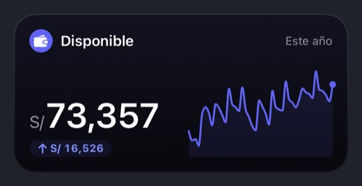
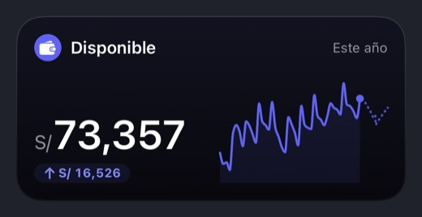
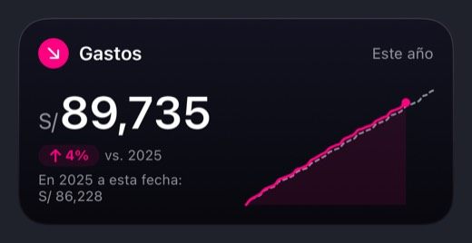

Reportes y Flujo de caja · lo que hay hoy
Hoy, vista a vista
Capturas del 7-nov-2026, app de origin/2.3 en el simulador, con semillas de prueba. Ninguna está editada.
Comparativa (FinancialReportView + PivotRowView + NetFlowSummaryView)
«Este mes», 1–7 de noviembre, semilla «realista».
Captura
Al abrir: dos filas y «Te quedó».
Captura
«Desglosar»: elegir niveles.
Captura
Con «Categoría» añadida.
Captura
Tabla por categoría.
Captura
«N/A», «−100 %», «+205.3 %».
Captura
Período: ocho opciones y «Personalizado».
Captura
La guía: «Rosa = gastaste más».
Captura
Vacío: sin acción.
Captura
Free: igual que Pro.
Desliza para ver las 9 pantallas →
Armar el plan (CashFlowSetupView)
Sin plan, semilla «realista».
Captura
Arriba: con cuánto empiezas y qué es.
Captura
«nar todo» bajo los chips.
Captura
Líneas pre-marcadas.
Captura
«Gastos que cambian · 20».
Captura
Resumen y «Crear mi plan».
Captura
Free: el mismo armado.
Desliza para ver las 6 pantallas →
El plan, mes a mes (CashFlowTableView + CashFlowMonthDetailView)
Recién creado con lo sugerido.
Captura
Guía «1 de 3»: toca para ver más.
Captura
Noviembre: «Este mes te sobran S/ 396.18».
Captura
Tarjetas de línea.
Captura
Siguen las tarjetas.
Captura
Bares: «Te pasaste por S/ 17.75».
Captura
Diciembre: «Proyección», «Estimado».
Captura
Febrero de 2027.
Captura
«···»: «Cuántos meses ver», «Reiniciar plan».
Desliza para ver las 8 pantallas →
Hojas del plan
Detalle de línea y Gráficas.
Captura
Detalle: «S/ 2,200 de S/ 2,200», «Avance diario».
Captura
«Ajustar monto», «Eliminar línea».
Captura
Gráficas: proyección de saldo a mayo de 2027.
Captura
«Ahorro mensual», «Gastos por revisar».
Desliza para ver las 4 pantallas →
«Ver proyectado» sin plan (con tu ritmo)
Tendencias y Panel, «Este mes».
Captura
Píldora apagada.
Captura
Encendida: línea punteada.
Captura
«Proyectado al cierre S/ 76,613.23».
Captura
El Panel: la misma cifra.
Captura
«Afinar con un plan…» abre el armado.
Desliza para ver las 5 pantallas →
«Ver proyectado» con plan
Después de «Crear mi plan».
Captura
Tendencias: S/ 69,390.71 «con tu plan».
Captura
Panel: S/ 69,390.71.
Desliza para ver las 2 pantallas →
Otros estados
Primera semana, vacío, Solo gastos, montos ocultos.
Captura
Primera semana: sin «Lo que entra».
Captura
«Te faltan al mes S/ 2,573».
Captura
Sin registros: «Sin datos».
Captura
Solo gastos: «Proyectado al cierre» es gasto, sin enlace.
Captura
Solo gastos: Más.
Captura
Ojo del Panel puesto: Tendencias enseña la cifra.
Captura
Y Flujo de caja también.
Desliza para ver las 7 pantallas →
Texto grande (AX3)
Captura AX3
Comparativa: sin nombres de fila.
Captura AX3
«Te que-dó», «S/ 4….00».
Captura AX3
Armado: la cifra no crece.
Captura AX3
«Sal ar…».
Captura AX3
«Crear mi plan» a 12 arrastres.
Captura AX3
«No-viem-bre», cápsulas cortadas.
Captura AX3
La cifra del mes, pequeña.
Captura AX3
«S/ 2….00 de S/ 2,….00».
Captura AX3
«S/ 76,…» bajo el «+».
Desliza para ver las 9 pantallas →
Widgets (banco de widgets, con plan)
«Este año», 7 de noviembre.
Banco

Saldo, sin proyectado.
Banco

Saldo, con proyectado: un tramo corto al final.
Banco

Gasto, sin proyectado (raya gris: 2025).
Banco
Gasto, con proyectado: dos punteados juntos.
Banco
Gasto, con proyectado, en claro.
Desliza para ver las 5 pantallas →
iPad
iPad Pro 13 (M5), vertical.
Captura iPad
Comparativa a todo el ancho.
Captura iPad
Armar el plan.
Captura iPad
El mes en curso.
Captura iPad
Tarjetas de línea a todo el ancho.
Captura iPad
Tendencias con el plan.
Desliza para ver las 5 pantallas →